| 预聚合表 | 粒度 | 核心内容 | Agent 使用场景 |
|---|---|---|---|
mv_monthly_sales |
年-月 | GMV、订单数、客单价、运费 | 趋势分析与预测输入 |
mv_state_sales |
年-月-州 | 州级 GMV、订单数、客户数 | 州排名与区域地图 |
mv_category_sales |
年-月-品类 | 品类 GMV、订单数、均价 | 品类表现与下滑诊断 |
mv_delivery_perf |
年-月-州 | 配送天数、准时率、延迟订单 | 物流时效诊断 |
mv_seller_perf |
年-月-卖家 | 卖家 GMV、订单数、平均评分 | 卖家治理与 What-if |
mv_payment_dist |
年-月-支付 | 交易数、平均分期、支付金额 | 支付偏好分析 |
项目答辩汇报
软件工程 · 商务智能案例分析期末项目
Agentic BI 驱动的多表电商运营分析与决策智能系统
基于 Olist 电商数据，完成自然语言问答、多表分析、预聚合加速、预测建模、评论洞察与决策建议的一体化系统。
黄迪学号：2354283
黄一和学号：2351269
夏浩博学号：2352048
Olist Brazilian E-Commerce Dataset · Agentic Business Intelligence1 /
12
项目完成情况总览
Project Overview9张原始业务表完成清洗、建模与关联
6张预聚合表可通过脚本一键刷新
7+个 Agent 角色由 LangGraph 有状态编排
6+类可视化接入统一 Web 仪表板
评分项覆盖
20 分数据预处理与多表查询已完成
10 分预聚合设计与性能优化已完成
20 分多智能体系统设计与协作已完成
20 分四层分析完整度与深度已完成
15 分可视化质量与仪表板交互已完成
额外加分能力
评论情感分析主题建模
What-if 模拟异常检测
多轮上下文记忆自动商业建议
我们的重点不是简单展示静态图表，而是让非技术用户通过自然语言完成“查询、解释、预测、决策”的完整分析闭环。
可运行代码、数据库、界面、Agent
流程和验证脚本均形成闭环
系统形成“查询—解释—预测—决策”的完整分析闭环2 / 12
系统架构：从自然语言到决策建议
Architecture
四层结构
- 交互层：Streamlit 双栏仪表板
- 编排层：LangGraph 状态图与条件路由
- 数据层：MySQL 原始表与预聚合表
- 能力层：查询、NLP、预测、可视化与决策
技术选型
LLM APILangGraphMySQLProphetStreamlit
自然语言问题经任务编排后，进入数据查询、模型分析与决策生成链路3 / 12
多智能体协作：按问题类型动态路由
Agent Orchestration
01 · 理解与规划
02 · 查询与按需分析
03 · 展示与决策
用户问题自然语言输入
→
上下文解析识别多轮指代
→
Coordinator分类并生成 task plan
Data Analyst视图优先 / JOIN 回退
→
NLP Insight情感与评论主题
Predictor未来 6 周预测
ScenarioWhat-if / 异常检测
Visualizer自动选择图表
→
Decision形成行动建议
→
Synthesis统一汇总回答
完整 LangGraph 流程
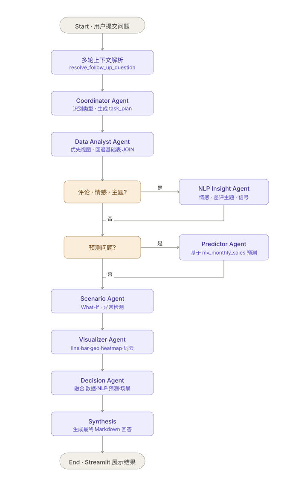
条件路由根据问题类型选择 NLP、预测或情景分析分支
共享状态传递中间结果，MemorySaver 支持多轮追问4 / 12
数据层：9 张明细表与 6 张预聚合表
Data Foundation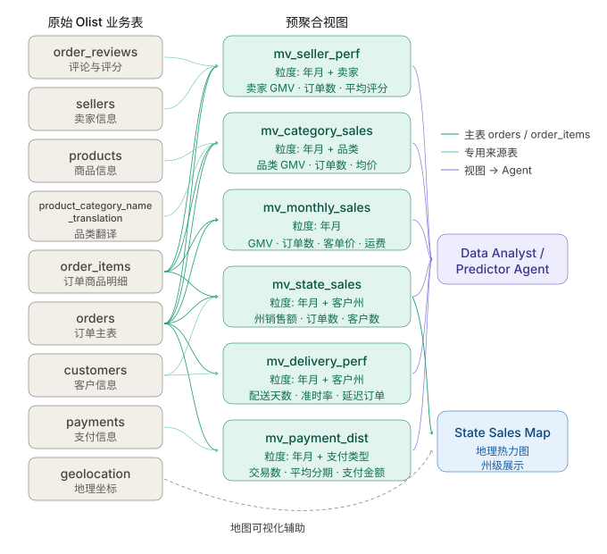
9
原始业务表
覆盖订单、商品、客户、卖家、支付、评论与地理信息，保留细粒度明细查询能力。
6
预聚合表
覆盖月度、州、品类、配送、卖家和支付六个高频分析维度。
1
统一刷新入口
rebuild_all_views() 从原始表重新计算全部汇总结果。
高频查询优先命中预聚合表，细粒度问题自动回退原始表 JOIN5 / 12
预聚合表：位置明确、字段可查、可以刷新
Pre-Aggregation
data/pre_aggregation_views.sql
utils/views.py
rebuild_all_views()
六张预聚合表均具有明确粒度、字段定义与业务用途6 / 12
性能优化：同一问题加速约 11.94 倍
Performance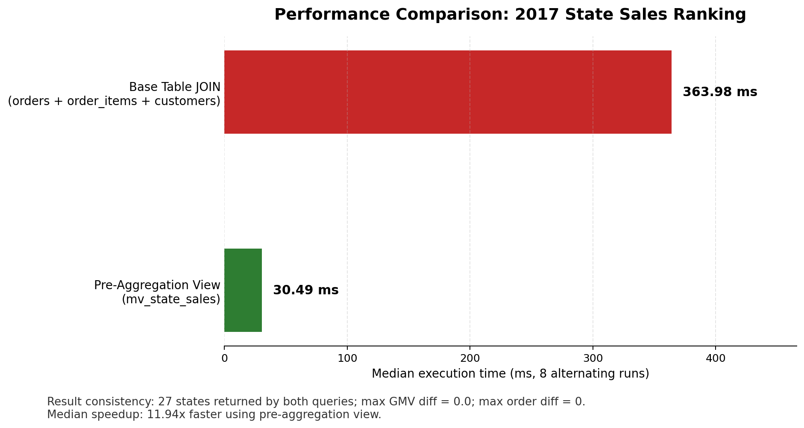
11.94×2017 年各州销售额排名查询加速
对照条件
- 预聚合表：
mv_state_sales - 基础表：
orders + order_items + customers - 中位耗时：30.49 ms vs 363.98 ms
- 27 个州结果全部对齐
- GMV 最大差异为 0
预聚合将中位查询耗时从 363.98 ms 降至 30.49 ms，结果保持一致7 / 12
四层分析：从“发生了什么”到“应该怎么做”
Analytics Depth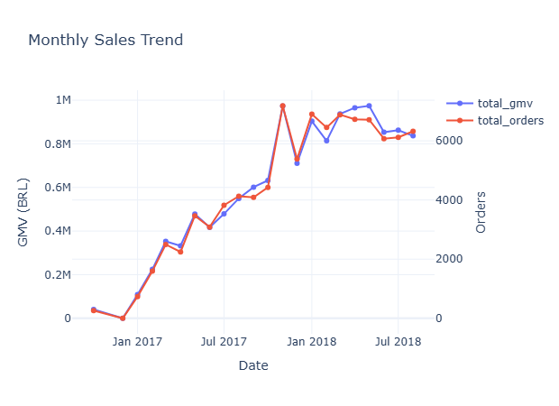
描述性分析
- GMV、月度趋势与州级排名
- 支付偏好和配送表现
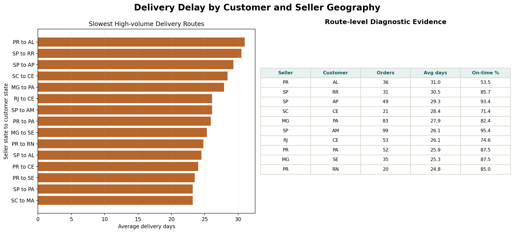
诊断性分析
- 客户州—卖家州跨州履约链路下钻
- 识别 PR→AL 等高时长、低准时率路线
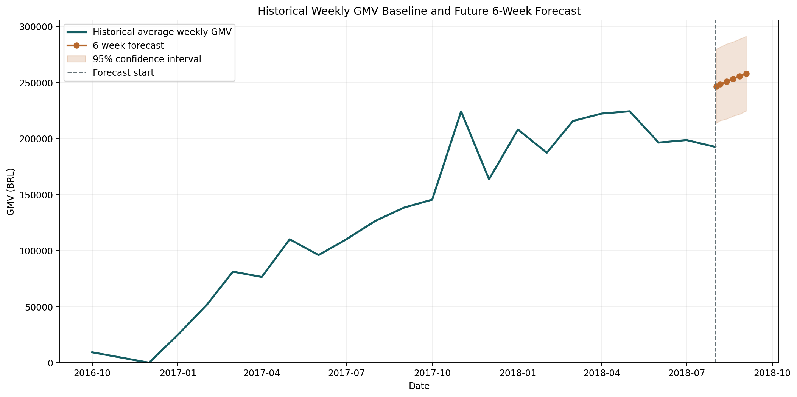
预测性分析
- 基于
mv_monthly_sales建模 - 输出未来 6 周预测与置信区间
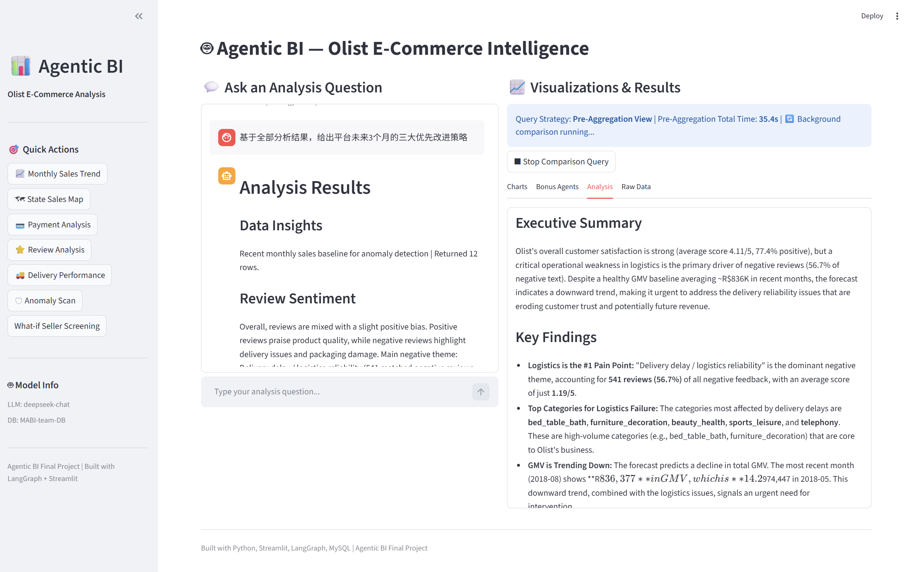
规范性分析
- 融合查询、预测与评论信号
- 输出物流 SLA 与卖家治理行动方案
描述、诊断、预测与规范性分析均已接入统一 Agent 流程8 / 12
交互界面：自然语言驱动的分析工作台
Dashboard统一 Web 仪表板
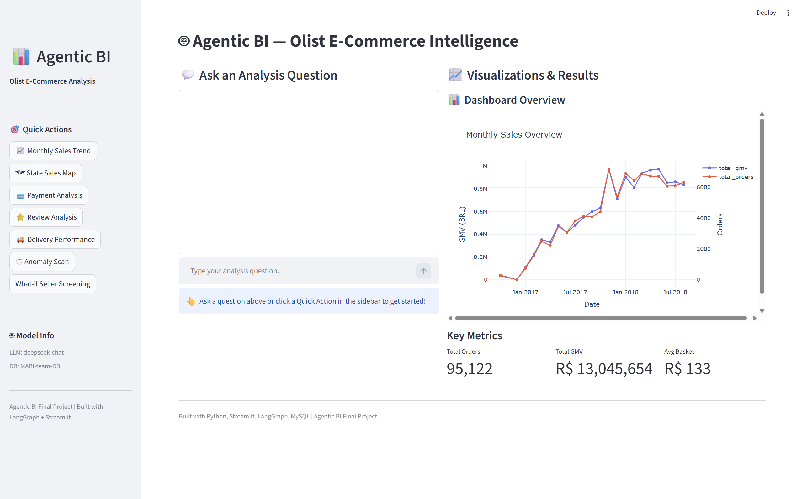
左侧对话与快捷操作，右侧展示图表、分析文本和数据结果
自然语言分析链路
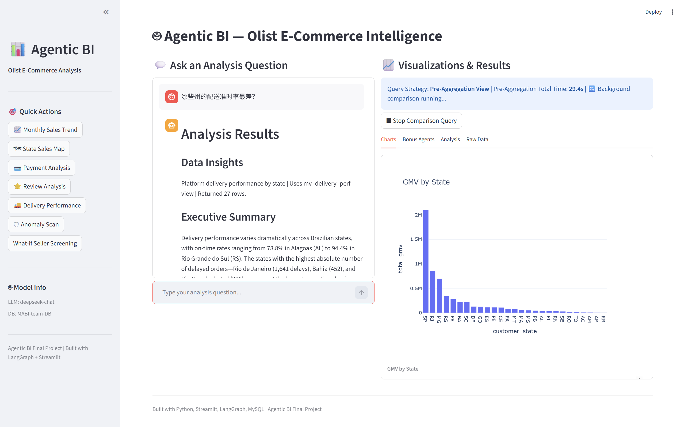
问题理解 → SQL 查询 → 图表生成 → 商业建议整合
连续问答可引用上一轮的州、卖家或时间范围9 / 12
可视化结果：六类图表覆盖核心分析场景
Visualization
时间序列折线图：月度 GMV
趋势
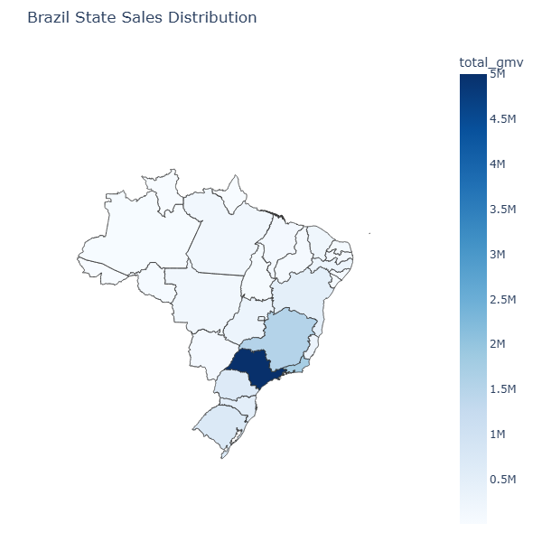
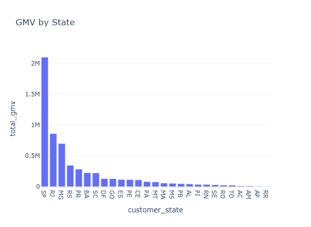
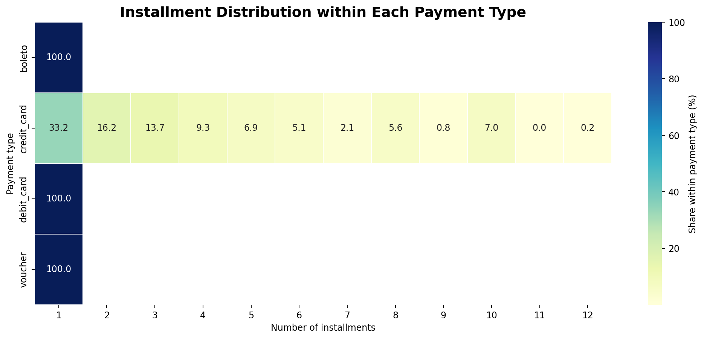
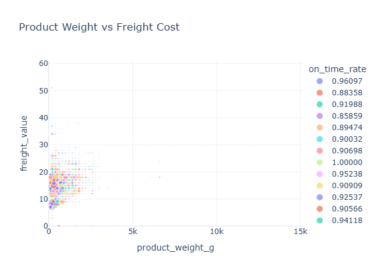
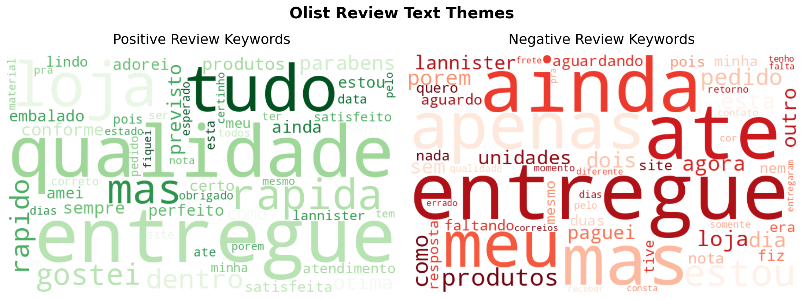
图表由 Visualizer Agent 根据数据结构与分析目标自动选择10 / 12
扩展能力：文本洞察、情景模拟与主动预警
Extended Capabilities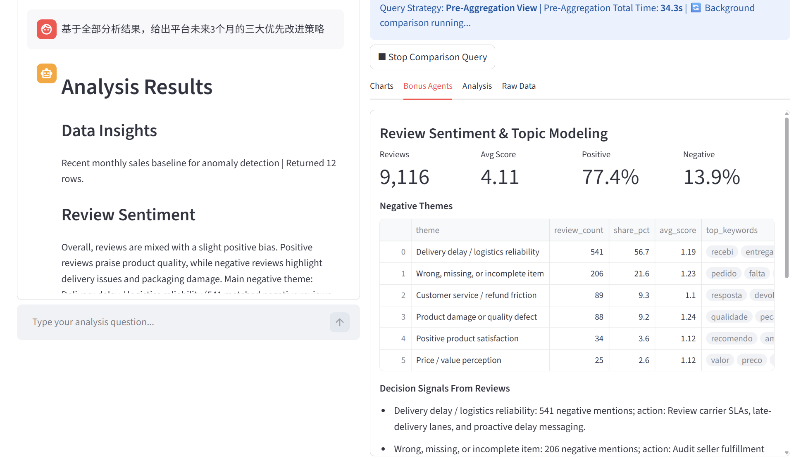
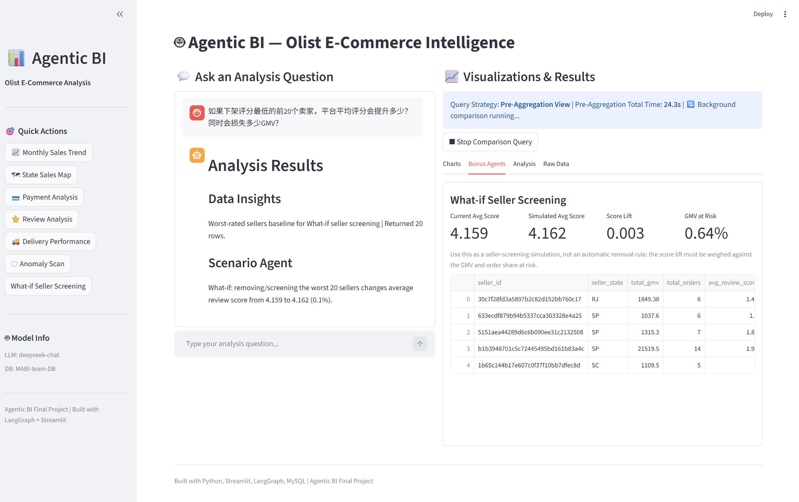
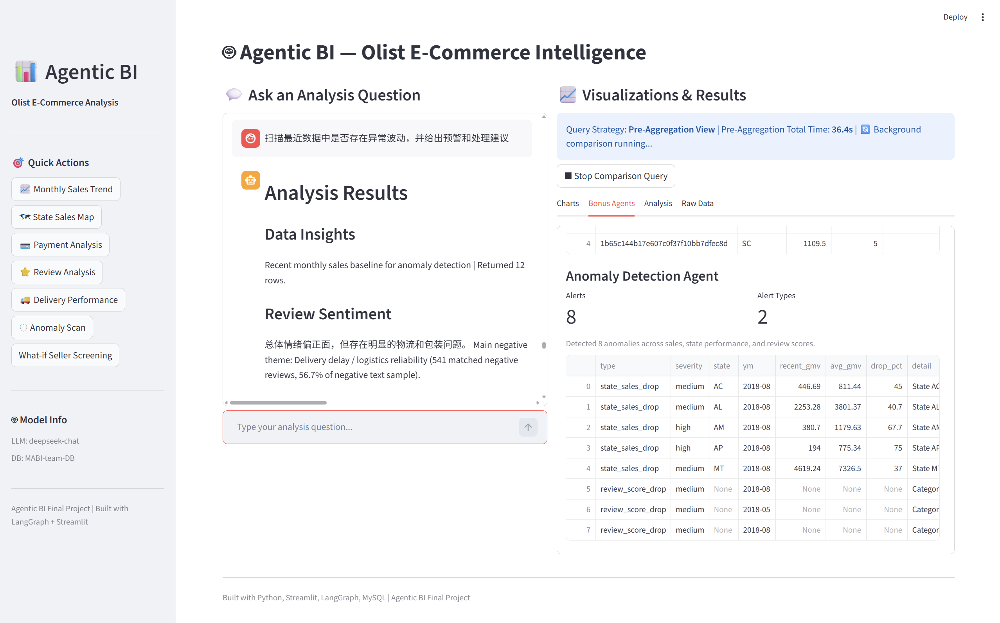
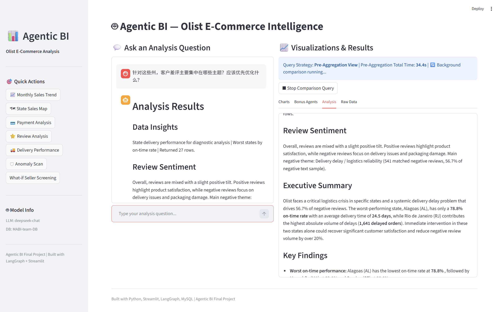
对应情感/主题、What-if/异常检测、记忆模块等额外加分11 / 12
验证结果与项目总结
Verification15 passed
pytest tests/test_e2e.py14
PASS官方验证题脚本：0 FAIL
最终结论
- 项目代码、数据库、Agent 编排和 Web 界面均可运行
- 6 张预聚合表有脚本、有刷新入口、有查询策略
- 性能提升约 11.94 倍，且结果一致
- 描述、诊断、预测、规范性分析形成闭环
- 加分能力均有实际界面或运行结果支撑
谢谢老师，欢迎提问与指导。
Agentic BI 将多表数据查询扩展为可解释、可预测、可执行的决策支持12 / 12